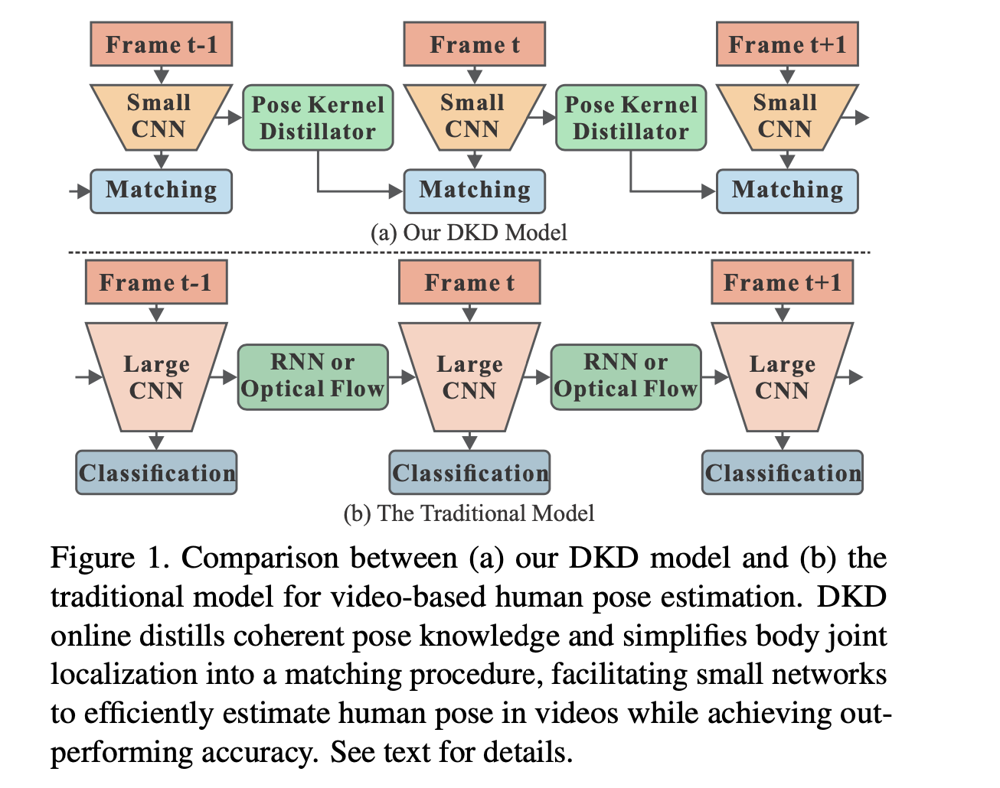
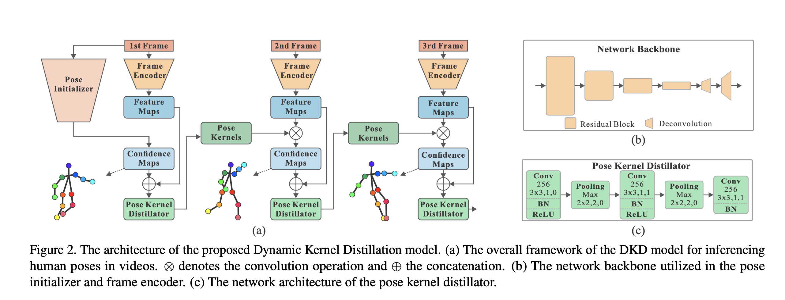
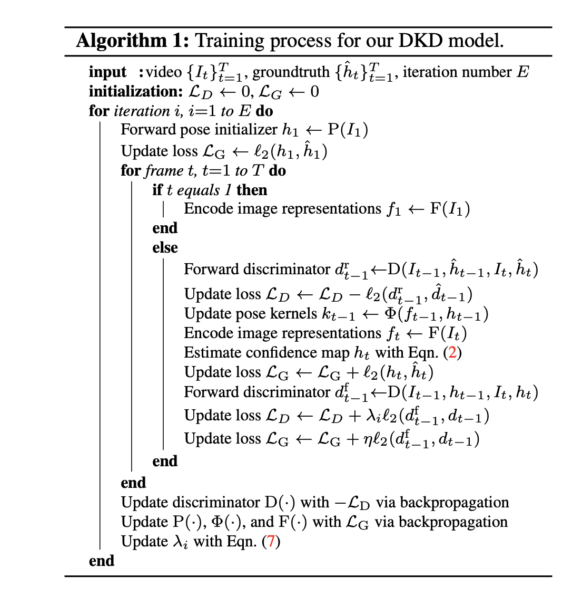

论文链接 ICCV 2019
这篇文章是姿态估计领域的，个人基本不了解，但是里面对于视频信息的处理方式上也类似动态卷积的方法，有一定的参考价值。文章有两个重点：新的帧间信息利用方式和对抗训练方法，这里主要关注前者，不过也会对后者做简要介绍。
之前的基于CNN的方法在处理视频数据时通常有以下做法：（1）对每一帧都使用一个大网络进行处理；（2）利用光流或者RNN来提取并利用帧间信息。然而以上方法的计算量都相当大，难以满足实时处理的要求。对此，作者认为没有必要将每一帧都通过一个大网络来得到特征，模型需要做的仅仅是学习如何把前一帧的信息传递到下一帧，因此本文就提出了DKD（Dy- namic Kernel Distillation）模块来完成这一任务，具体的结构对比如下图所示：

这个图是网络的整体结构图，里面对DKD模块有更详细的展示：

可见，DKD其实就是一个轻量级的CNN，用法就是之前介绍的动态卷积中的filter generating network，不同的输入通过模块处理后可以得到不同的filter（本文中称之为kernel，没什么区别），然后通过这个动态学习的kernel与特征进行卷积，从而实现帧间的信息传递，同时相比先前的光流、RNN等方案可以明显降低运算量。
不过在具体实现上这个kernel的具体形状和姿态估计任务的特点有关，个人暂时还不清楚具体含义。
此外，本文的另一个重点在于采用了对抗训练。文中采用这一训练方式的目的在于更好的利用时域信息。discriminator的目标为重建相邻两帧的差异（也就是差值），使重建后的差异接近真实的差异（ground truth的帧间差异），同时远离预测结果的差异（也就是模型输出的帧间差异）。模型的训练方法如下图所示，方法细节因为在这里不是重点就不多介绍，可以直接原文（其实是我也不熟悉对抗学习说不下去了）。

在网络的具体实现上，模型的backbone网络主要可以分为四类：Pose initializer，Frame encoder、Pose kernel distillator和对抗学习中用到的Temporally adversarial discriminator。Pose initializer是基于resnet构建的U-net网络变体，用来提供初始的confidence map；Frame encoder和Pose initializer的结构基本一样只是最后去掉了最后的分类层，但是重点在于Frame encoder的backbone网络要比Pose initializer轻量很多，从而可以显著降低运算量；Pose kernel distillator的结构在先前的网络整体结构图里展示了详细构造；而最后的Temporally adversarial discriminator为平衡学习能力，采用了和Frame encoder一样的backbone网络。